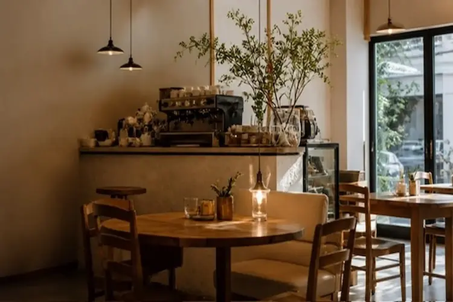
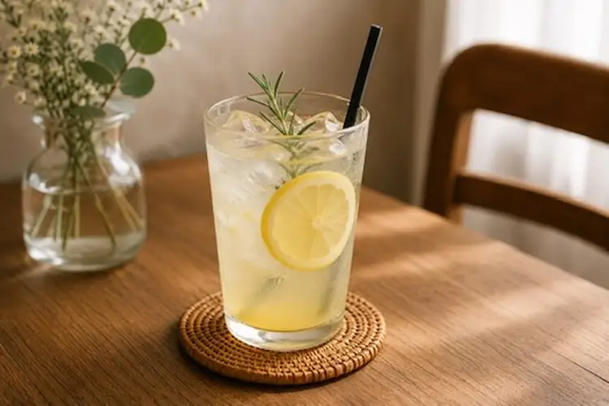

ターゲット Target
落ち着いた空間でゆっくり過ごしたい20〜40代の女性・カップル
落ち着いた雰囲気のカフェサイト制作しました。

本プロジェクトはポートフォリオ用に制作した仮想案件です。
「Café Mocha」は、やさしい光と落ち着いた空間をコンセプトにした架空のカフェサイトです。
温かみのあるブラウンカラーと余白を活かし、居心地の良さや店舗の雰囲気が伝わるデザインを目指しました。
スマートフォンでは横スクロールUIを採用し、写真を大きく見せることで、カフェの世界観を直感的に感じられる構成にしています。
また、シンプルな情報設計と視認性を意識し、ユーザーがストレスなく閲覧できるレスポンシブサイトとして制作しました。
自家焙煎コーヒーと手作りスイーツを提供するカフェ
落ち着いた空間で過ごしたい20〜40代の女性・カップル
温かみのある店内空間と、こだわりのコーヒー・季節のメニュー
SNSでの発信が中心で、店舗の雰囲気やメニュー情報をまとめて伝える場が少ない
2026年4月18日〜2026年5月9日(21日)
HTML / CSS / javascript
デザイン / コーディング
SNSでの発信が中心で、店舗の雰囲気やメニュー情報がまとまって伝わりにくい状態でした。 カフェの世界観を伝えながら、来店前に必要な情報へスムーズに辿り着けるサイト制作を行いました。
落ち着いた空間でゆっくり過ごしたい20〜40代の女性・カップル



カフェの温かみや落ち着いた雰囲気を伝えるために、ブラウン系のカラーを基調にデザインしました。 店内写真やメニュー写真を大きく配置し、来店前にお店の空気感をイメージしやすい構成にしています。
仮想案件のため実測値はありませんが、カフェサイトの目的に対して以下の改善を想定して制作しました。